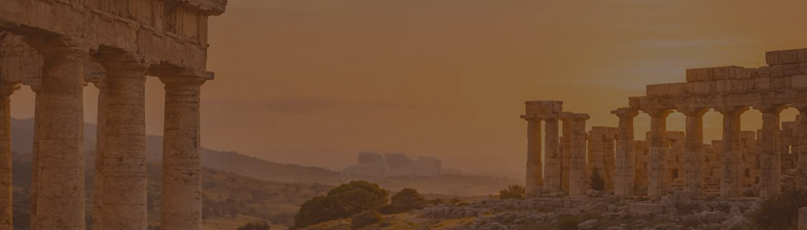
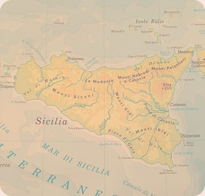

Tesori siciliani
Le piazze della Sicilia

Clicca quiScopri di più sulle province siciliane
Le piazze siciliane sono il cuore pulsante delle città e dei borghi dell’isola: spazi di incontro, memoria e vita quotidiana, dove il sole illumina la pietra antica e le storie si intrecciano da secoli.
Nate spesso come agorà nel periodo della Magna Grecia e trasformate nei secoli sotto Arabi, Normanni e Spagnoli, custodiscono chiese barocche, palazzi storici e fontane monumentali. Uno spazio aperto dove comunità, cultura e tradizione vivono ogni giorno.